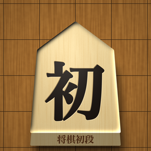

初段をめざす級位者の、毎日の練習
将棋初段は、その日に解く詰将棋と、覚える型を「今日はこれ」の1枚で出すiPhoneアプリです。
今日はこれ
- 詰将棋: 1手詰めなら10問、3手詰めなら7問、5手詰めなら4問。前に間違えた問題も最大3問
- 型: 詰みの形6つと囲い3つ(美濃囲い・舟囲い・矢倉)から、日替わりで1つ
- 負けた対局を1局だけ、3つの問いで振り返る
10段のはしご
1手詰め3段 → 3手詰め4段 → 5手詰め3段。7割以上を目安の時間で解けた日が2日続けば一段上がり、5割に届かない日が2日続けば一段下がります。間違えた問題は1日後・3日後・7日後に出し直します。
問題は、すべてアプリで作りました
詰将棋は既存の問題集から写していません。自動で作り、「ちょうどその手数で詰む・攻め方の手が一本道・駒が余らない」を全問、機械で確かめたものだけを入れています。短い問題は、既存の作品と偶然同じ形になることがあります。お気づきの点はサポートからお知らせください。
対局の記録と節目の案内
勝ち負けを1回押すだけで記録し、ご自身の段級から「初段まであと何級か」を出します。3連敗したときは、対局を休んで詰将棋だけにするか、負けた1局を見直すかを選べます。
3つの約束
- 記録は端末の中だけ。アカウントはありません。
- 練習の決め方の根拠にした資料を、アプリの中で見られます。
- このアプリだけで初段になれるとは言いません。
このアプリは、日本将棋連盟ほか、アプリ内で資料として挙げた団体・棋士・サービスとは関係がなく、公認や推薦を受けたものではありません。